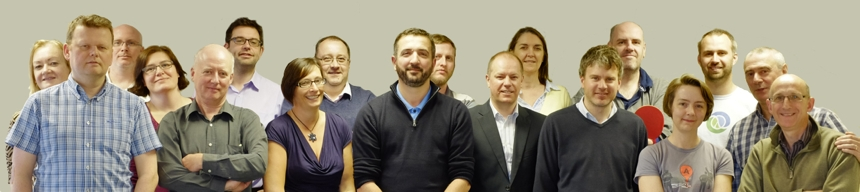
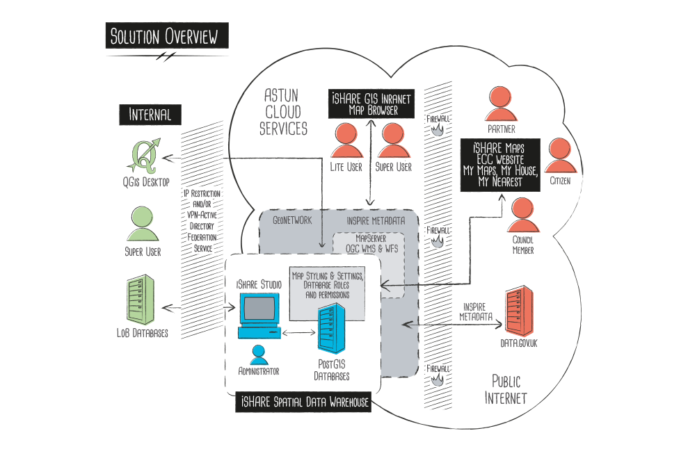
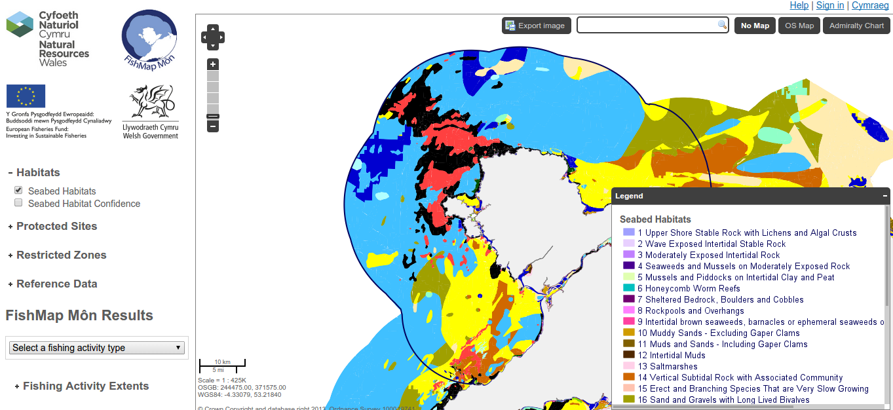
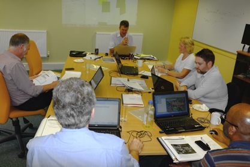
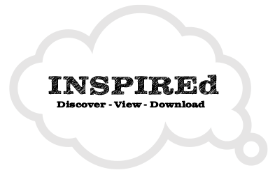
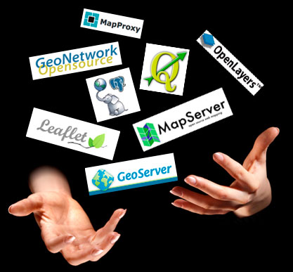
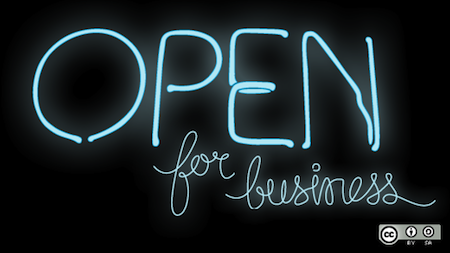

Open Source GIS
For fun and profit
The Questions
- Who is this person standing up here?
- What does Open Source really mean?
- What is it like to work in Open Source GIS?
- What technologies are worth focussing on?
Who is this person?
- I've been working in GIS since 2001
- First within archaeology, and now working for a GIS consultancy
- I "discovered" Open Source GIS for myself in 2005(ish)
- Now I work almost exclusively with Open Source GIS
- I work for Astun Technology, and I'll talk a bit more about what we do later
What 'Open Source' really means
It's just a license...
...but a different kind, that protects the author of the code, whilst disallowing discrimination and restriction of use
It's not like this

Or even this

It's about interoperability and common standards

It's about given you long term control over your work

It's about having the choice over which tools you use

OSGeo Live Wordcloud
So, how can you make a career in Open Source GIS?
By adding value, expertise and support
Introducing Astun Technology
At Astun, we have a software suite
Primarily used by local councils

We also make bespoke software
We run training courses
We help organisations meet their INSPIRE requirements
We run user groups

and Hackathons

All of this is based on the Open Source GIS stack
The underlying source code is free, but we add value/support/expertise
Key Technologies
Whether you go into Open Source or not
Databases: PostgreSQL
- PostgreSQL is increasingly used as a cost-effective replacement for proprietary databases
- The basics of server-based, spatially enabled databases are roughly applicable to PostgreSQL, SQL Server and Oracle
- So installing PostgreSQL/PostGIS and learning some SQL is a really good thing to do
This needn't be difficult or time-consuming...

Desktop GIS: QGIS
- These days, QGIS is a perfectly acceptable replacement for proprietary desktop GIS
- It's also fully cross-platform, with loads of support
- Learning how to translate skills learned in other packages is important
It's increasingly being installed in "traditional GIS" environments

Scripting: Python
- Both open source and proprietary GIS use python
- It has modules for working with rasters, vectors, databases and many more
- You WILL be able to write working code within minutes of starting to use it!
Use it to automate or chain together tasks that would otherwise eat up your time

Sharing: GitHub
- The easiest way to learn about repositories and version control
- It's not just for code- share documentation/presentations/data/your CV
- Both proprietary and open source companies have an increasing presence
Honourable Mentions
- Mapserver- for making your data work on the web
- Javascript- the language of choice for web-based mapping and data visualisation
- CSS- for making maps look pretty
- Open Data- for having something to actually work with
Things to take away
- Learning SQL and scripting will get you a step up, whatever area you go into
- Learn how to do things in multiple packages/ways, rather than learning a sequence of button presses
- Keep exploring and sharing- you never know what opportunities will show up
- Keep an open source mindset!
Thanks!
Questions?
Find me at about.com/jocook
Find this talk at github.com/archaeogeek/UCL2014_talk